- 10 days in March + 7 in May–June
- 14 of 16 nights free (family)
- About £1,000–1,675 (estimate)
Ad: some booking links on this page are, or will be, affiliate links. If you book through them I may earn a small commission, at no extra cost to you. I only link to places and trips I actually used and paid for myself, and I say plainly when something wasn't worth it.
Part of my 11 weeks on Australia's east coast and Tasmania. This page covers Sydney and the Blue Mountains only. Each region works as a block on its own, so you can do just this one or link it to others.
Days to allow
I had two blocks here, one at each end of the trip:
- 17–26 March (10 days), straight off the long-haul flight. Seven days in Sydney, then three in the Blue Mountains.
- 26 May–1 June (7 days), after flying back down from Cairns. The last day was the flight home.
A lot of the March block was family time, so it was slower than a visitor's trip would be. On 27 March I flew on to Melbourne and then Tasmania.
Rich to update: how many days you'd tell a visitor to allow for Sydney and the Blue Mountains.
The route at a glance
March: Sydney airport → Sydney (bush walks, the Northern Beaches, Palm Beach) → Blue Mountains (Three Sisters, Govetts Leap, Anvil Rock, Wentworth Falls, Olympia Rock) → back to Sydney → fly to Melbourne.
May–June: Bondi to Coogee → Blue Mountains (one night in Leura) → Northern Beaches → Watsons Bay → Sydney Harbour → fly home.
I got an Uber from the airport rather than the train in the plan. After that I mostly used a borrowed family car, plus buses and trains to get to Bondi.
What it really cost
Figures are in GBP, per person. Most of these are estimates from my plan, not what I paid, because I stayed free with family for most nights and used a borrowed car.
| Per person | |
|---|---|
| Places to stay, March (10 nights) | Free (family stay) |
| Places to stay, May–June (6 nights) | 4 nights free (family stay), plus 2 shared hotel nights: The Grace Hotel about £125 my share (estimate), Fairmont Resort Leura Rich to update |
| Day costs, 17–26 March (fuel, food, activities) | about £370–740, adding up my daily estimates from the plan |
| Day costs, 26 May–1 June (incl. a BridgeClimb estimate of A$250–350) | about £405–670, adding up my daily estimates from the plan |
| Onward: Uber to the airport and flight to Melbourne (27 March) | about £100–140 (estimate) |
| Total | about £1,000–1,675, plus the Fairmont night |
Flights to and from the UK aren't included.
Rich to update: whether the plan's day estimates already include the two hotel nights, what you actually paid for the Fairmont and The Grace, and what the Uber from the airport cost.
Without family or free stays: my totals understate what you'd pay, because 14 of my 16 nights here were free and I borrowed a car.
- Rich to update: what a visitor would pay for 12 nights in Sydney.
- Rich to update: what a visitor would pay for 2 nights in the Blue Mountains.
- Rich to update: what a hire car would cost for the days I used the borrowed one.
Day by day
March: arrival block
Day 1 · 17 MarchLand in Sydney
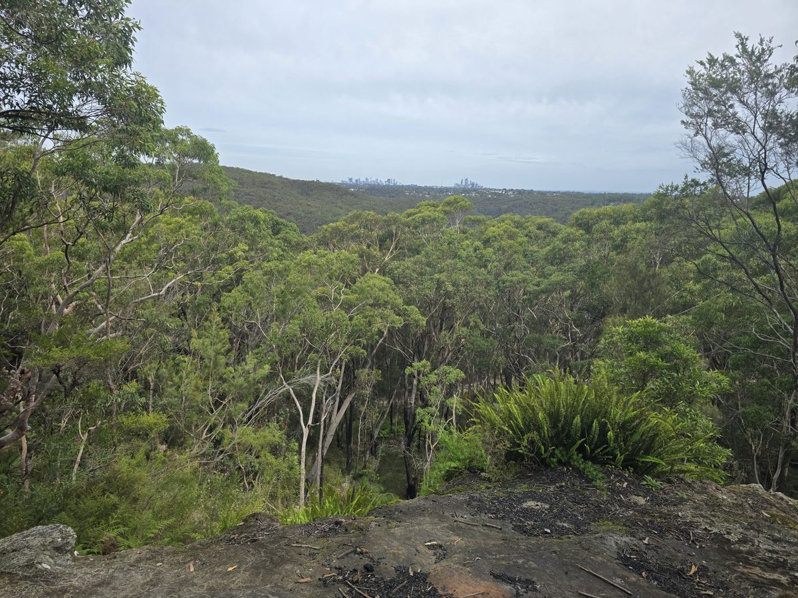
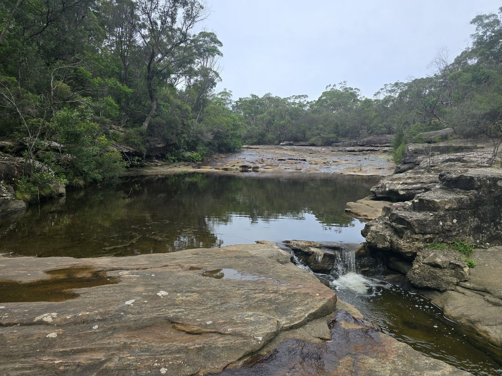
Arrived in the morning and got an Uber from the airport. Jet lag was pretty good, so I walked to the baker's for bread, had lunch, then went on an afternoon hike in the bush. Evening with family.
Rich to update: where the afternoon hike was (the plan said Ku-ring-gai Chase).
Day 2 · 18 MarchManly and Curl Curl
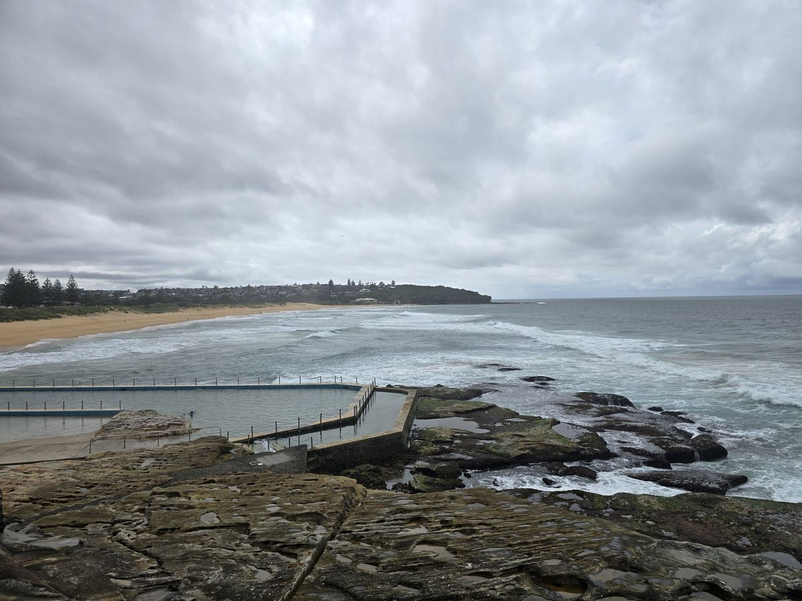
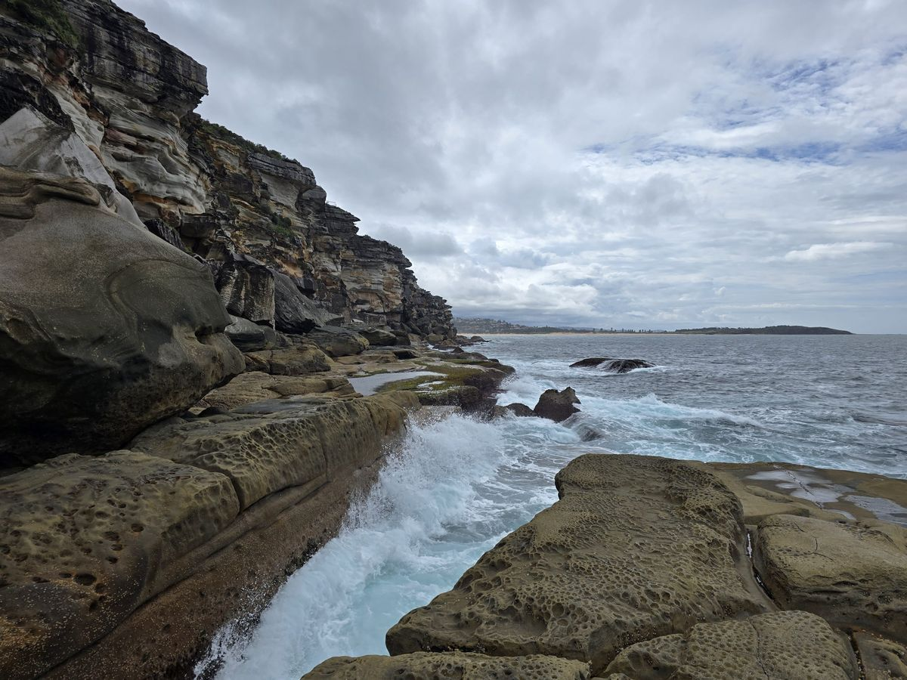
Caught up with a friend, then walked up Manly Beach, drove to Curl Curl and walked up and down the beach there, watching the waves crash against the rocks. On the walk back it poured down and I got soaked, so I went for lunch at a café. The rain didn't stop, so I popped into an indoor pickleball place nearby. I couldn't get a slot, but I watched for a while.
The plan for this day was a Hunter Valley day trip.
Day 3 · 19 MarchPickleball, then rain
A pickleball drills session in a huge 4-court basketball hall nearer the middle of Sydney. The level was low and it was very hot. In the afternoon I set off for a waterfall walk, stopping for lunch at a sports bar on the way: a burger and the worst pint of Guinness I've ever had. Then it absolutely chucked it down and didn't stop. Plan B was an advanced pickleball group instead, which turned out to be a great level with good matches.
The plan for this day was a Central Coast day trip.
Day 4 · 20 MarchPalm Beach
A day out with a friend and her family to the lighthouse at Palm Beach. We walked down the beach, only to be turned away from the walk up because there was a dog with us, and dogs aren't allowed in national parks. Lunch was the next best plan: lobster rolls, chips and a pint. Then it poured on the walk back and we all got wet.
Tip: if you're travelling with a dog, check the rules first. No dogs in the national park meant no lighthouse.
The plan for this day was the South Coast (Sea Cliff Bridge and Royal National Park).
Day 5 · 21 MarchA night out in Manly
A chilled morning, then a night out with family in Manly. Lots of laughs and a late one.
Day 6 · 22 MarchA family day
The best weather so far, and I spent the whole day outside. Plans for the week changed about five times. All good.
Day 7 · 23 MarchA bush walk
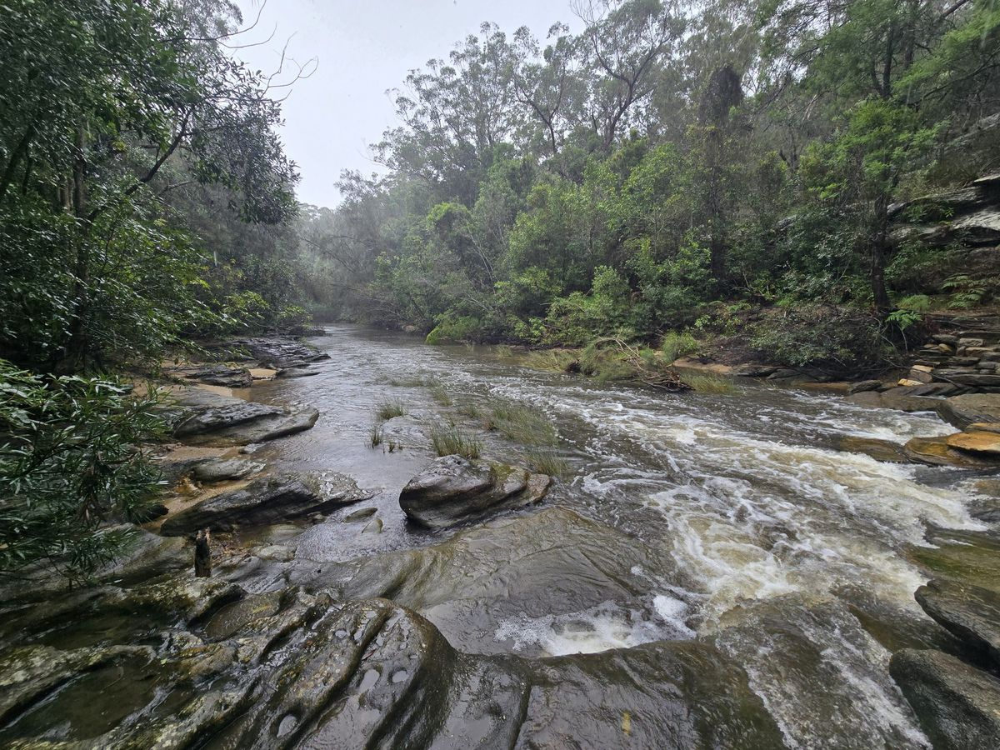
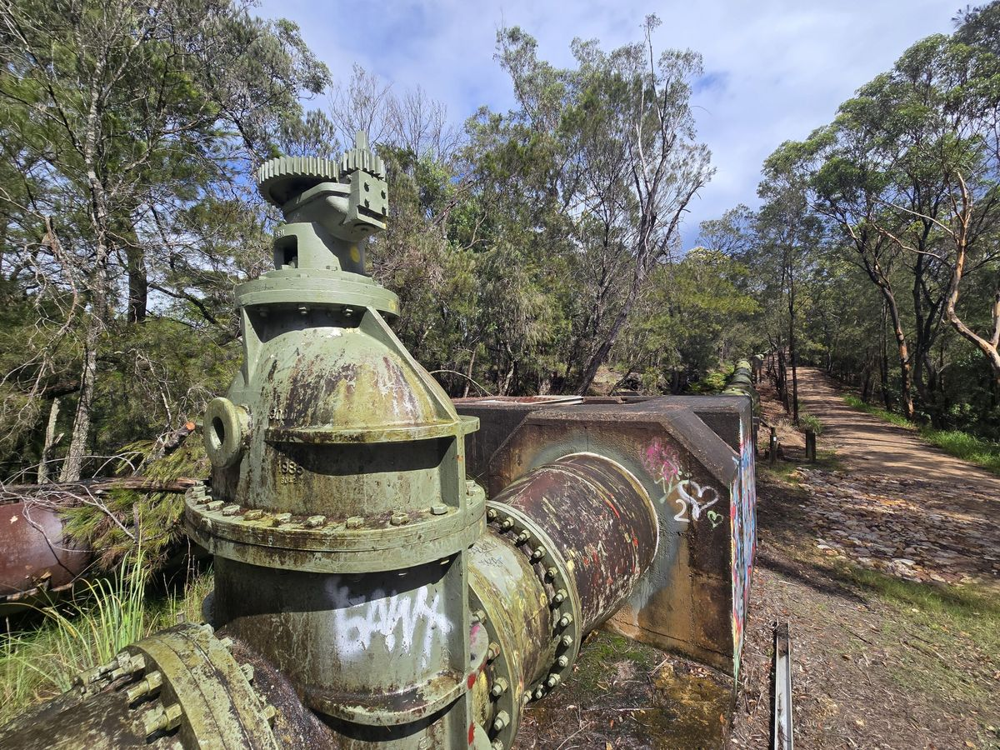
A great day walking in the bush. I only saw two people in 4 hours. I followed the river all the way down to the old pipeline, then went into town for a salmon bagel and a smoothie. Evening at the pub with family.
Rich to update: the name or start point of this walk.
Day 8 · 24 MarchDrive to the Blue Mountains
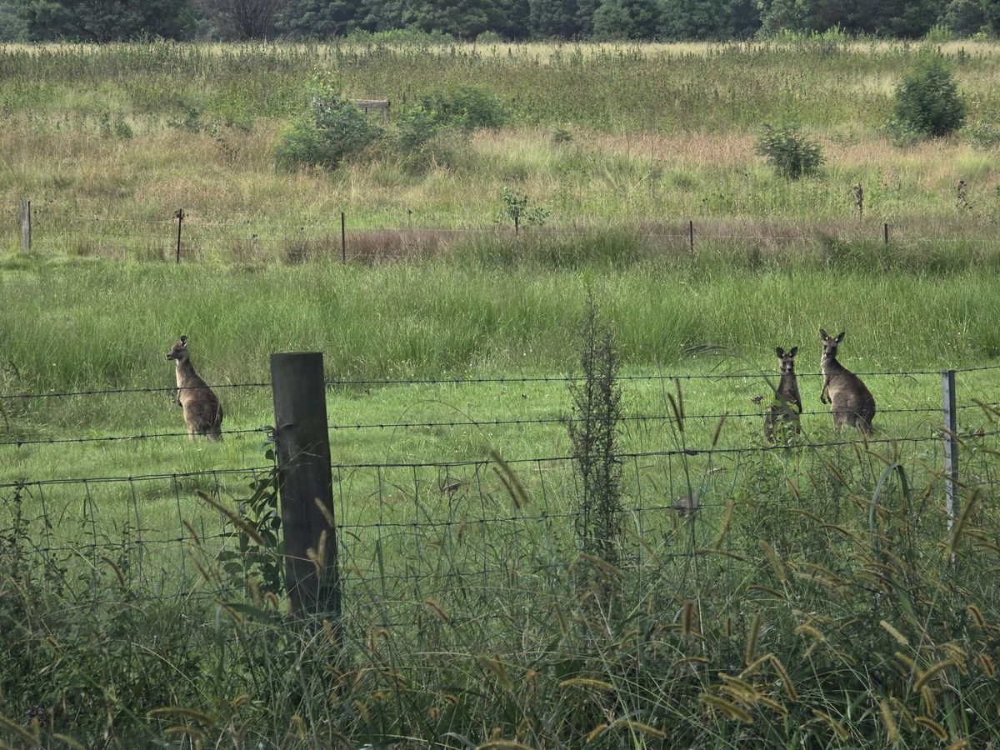
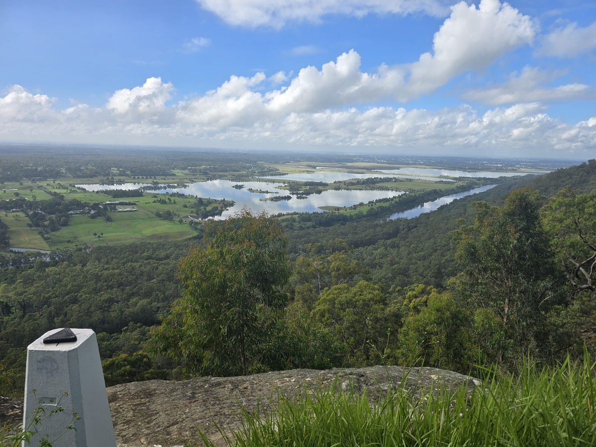
I stopped at several spots on the way to look at the view and the kangaroos. A chilled afternoon and evening with family, with wine on the porch.
Day 9 · 25 MarchThree Sisters, Govetts Leap and Anvil Rock
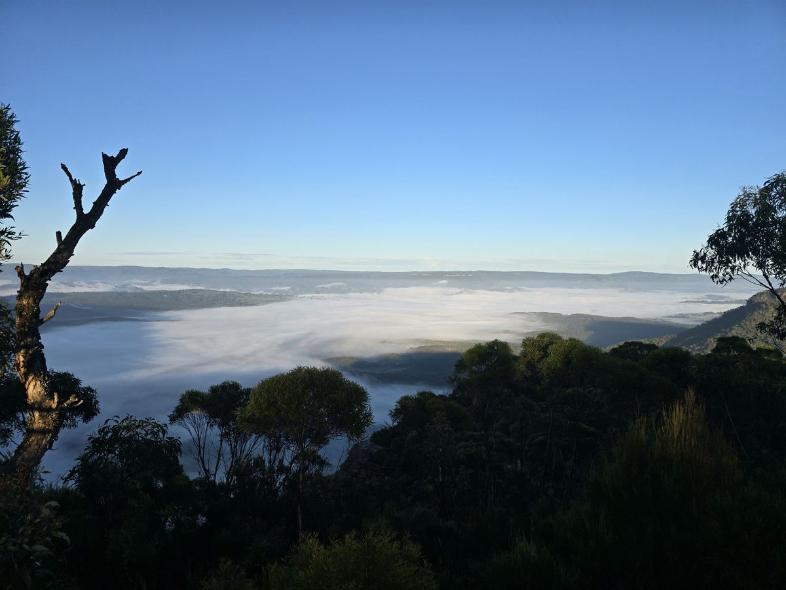
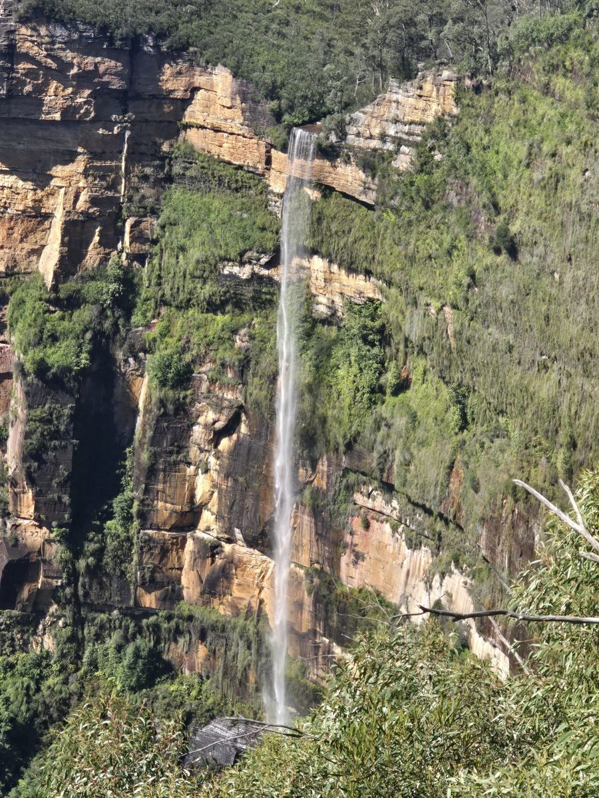
Up early for a short walk to the Three Sisters lookout and a coffee. After breakfast, a walk down at Govetts Leap, playing in a rock pool and jumping on rocks. Food in town, then on to the stunning Anvil Rock. A great balance. Pickleball in the evening in Katoomba, which was good.
Day 10 · 26 MarchWentworth Falls and Olympia Rock
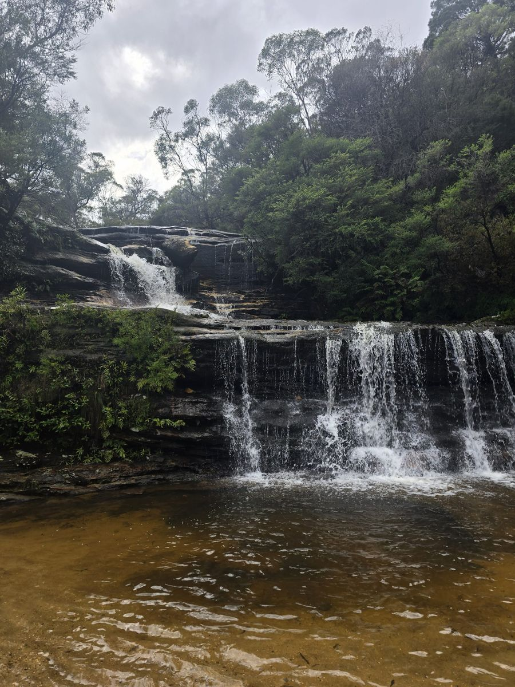
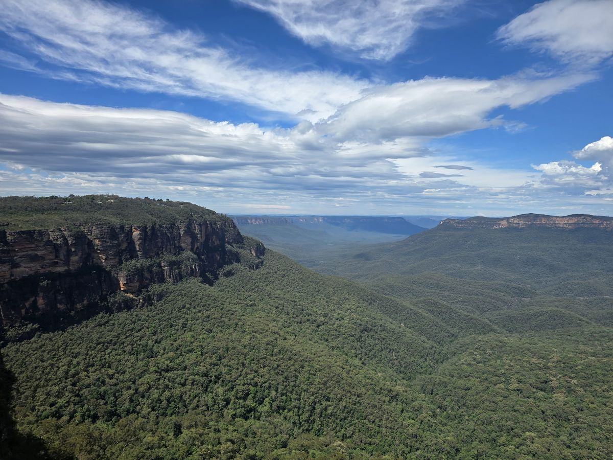
An epic walk down to the bottom of Wentworth Falls, which was amazing, then back up. Lunch, then Olympia Rock. Then back to Sydney.
The plan for this day was sunrise at Elysian Rock, the Grand Canyon Walk at Blackheath and Lincoln's Rock at golden hour. I did Wentworth Falls instead.
27 March: a very early Uber to the airport in the rain, and a delayed flight on to Melbourne and then Tasmania.
May–June: the final week
Day 11 · 26 MayBondi to Coogee
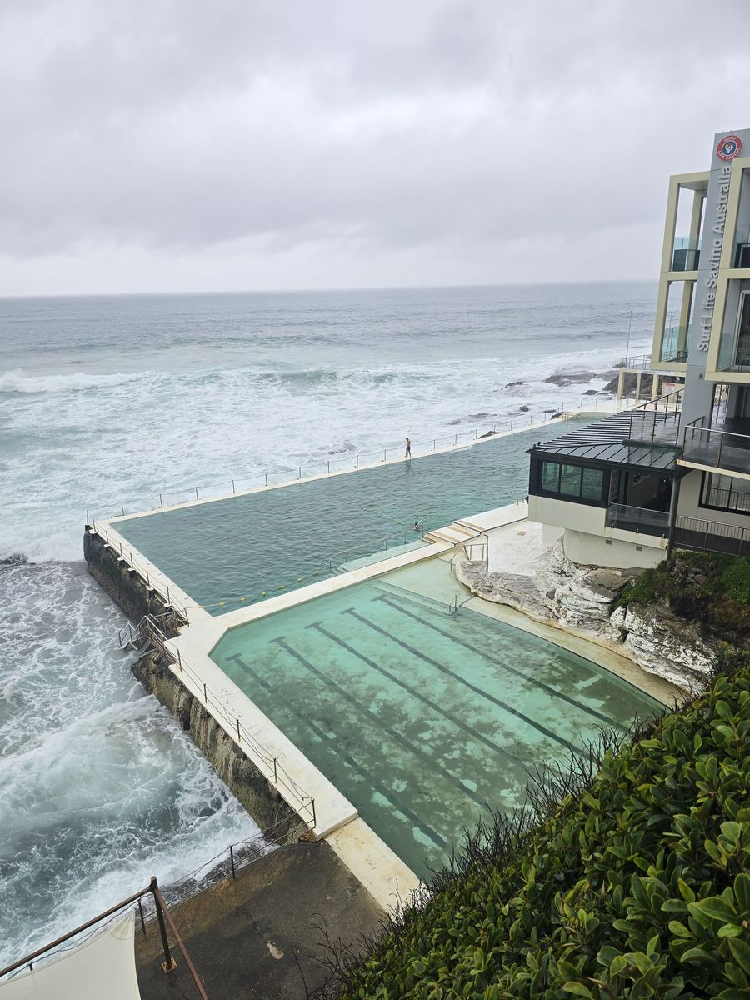
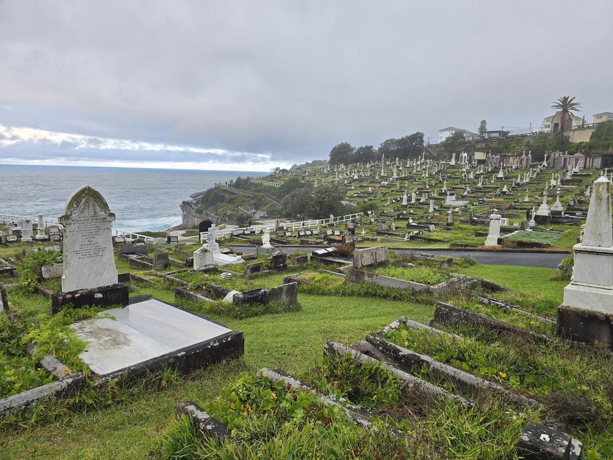
It was raining, so I grabbed an umbrella and took a bus, three trains and another bus to Bondi Beach. I walked along the beach and back, had a Mexican lunch, then set off on the Bondi to Coogee coastal walk. It came to 12 km for me; the plan had it at about 6 km. Very pretty, especially the cemetery by the sea. It was dark by the time I reached Coogee, so I had a pint and paid to recharge my phone before heading back.
Tip: start earlier than I did, and carry a power bank.
Day 12 · 27 MayBlue Mountains
The plan: Echo Point, the Giant Stairway (998 steps) and the Federal Pass to Scenic World, booked ahead. Night at the Fairmont Resort Leura (shared).
Rich to update: what you actually did.
Day 13 · 28 MayThree Sisters
The plan: Leura Cascades and the Prince Henry Cliff Walk, leaving the Blue Mountains by noon for the Grand Pacific Drive (Bald Hill, Sea Cliff Bridge, Nan Tien Temple, Kiama Blowhole).
Rich to update: what you actually did. Did the Grand Pacific Drive happen?
Day 14 · 29 MayNorthern Beaches
The plan: Manly, Shelly Beach, Freshwater, Curl Curl and Dee Why, with fish and chips.
Rich to update: what you actually did.
Day 15 · 30 MayWatsons Bay
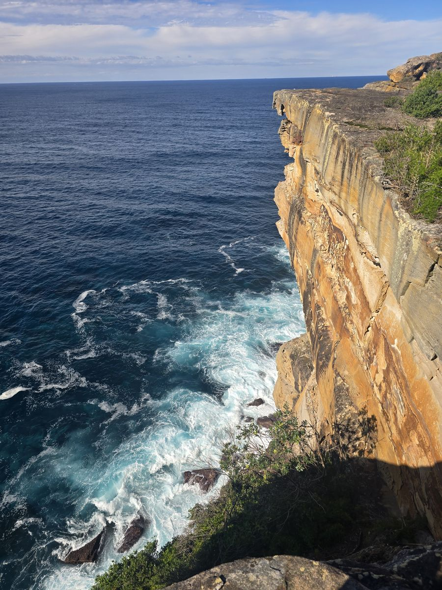
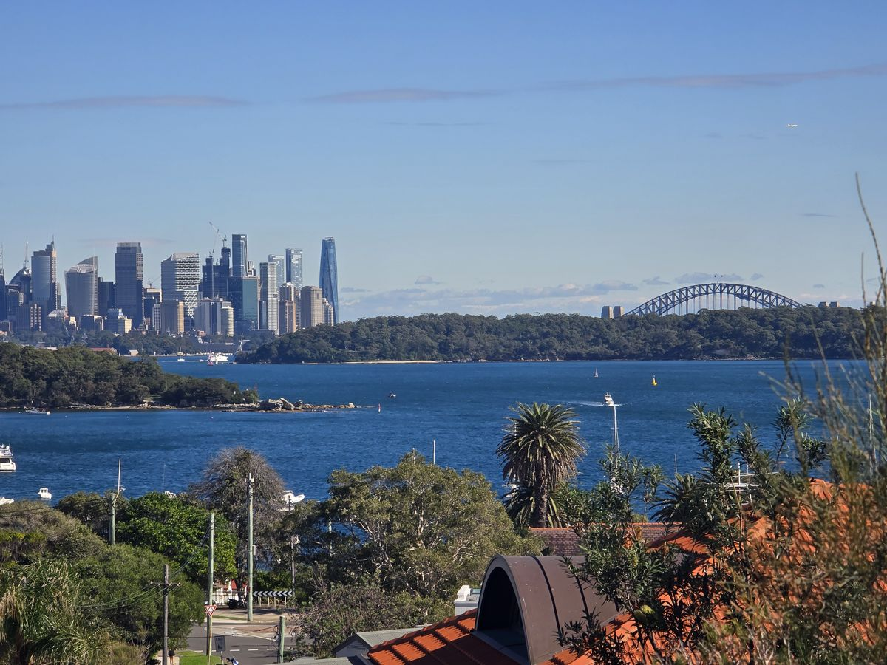
A clear blue day. My photos are from The Gap, with the sea crashing below the cliffs, and the view back across the harbour to the city and the Harbour Bridge.
Rich to update: what else you did, and your verdict on Watsons Bay.
Day 16 · 31 MaySydney tourist
The plan: the Opera House area, then the BridgeClimb Vivid Summit at 5:05pm (3 hours). Night at The Grace Hotel in the city (shared).
Rich to update: did the BridgeClimb happen, and was it worth the money?
Day 17 · 1 JuneThe harbour, then home
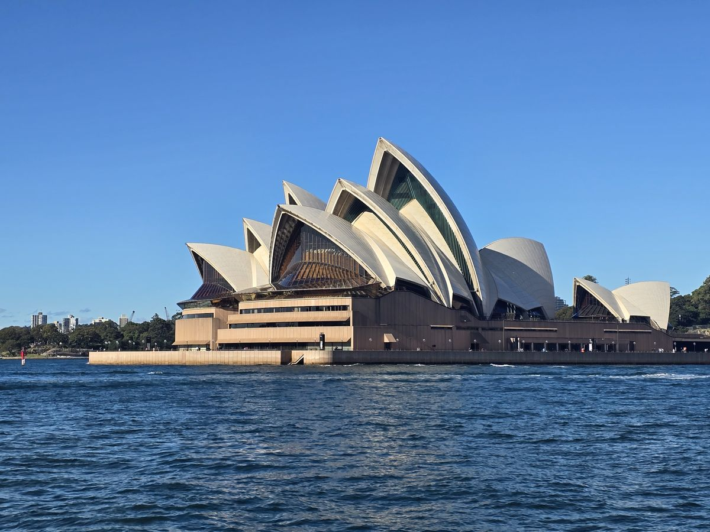
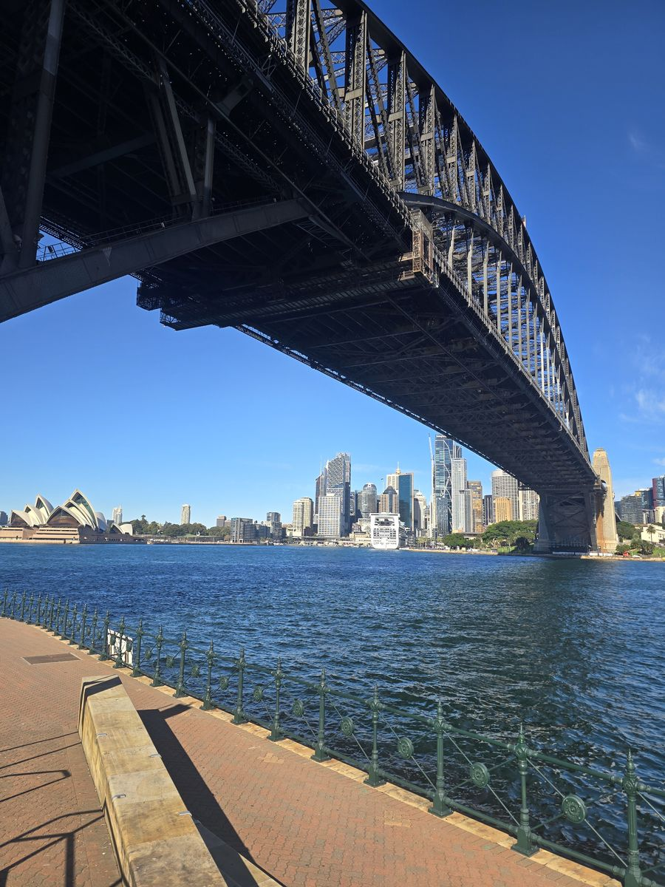
My photos from the last morning are from the harbour: the Opera House from the water and the Harbour Bridge from below. Then a day of flying home.
Rich to update: what you did on the last morning, and whether it was worth fitting in before a 3pm flight.
Weather plan B
March brought a lot of heavy rain. What I swapped in:
- 18 March, Curl Curl: soaked on the beach walk, so lunch in a café and then a look round an indoor pickleball centre.
- 19 March, the waterfall walk: rained off, so plan B was an indoor pickleball session.
- 20 March, Palm Beach: drizzle turned to a downpour, so a long lunch instead.
- 26 May, Bondi: it was raining, but I took an umbrella and did the Bondi to Coogee walk anyway.
Rich to update: why the Hunter Valley, Central Coast and South Coast day trips were dropped (weather or something else), and what you'd swap in for a rained-off Blue Mountains day.
Do this / skip this
Do this
- Wentworth Falls, down to the bottom. Epic and amazing.
- Anvil Rock. Stunning.
- The Three Sisters lookout early in the morning, before breakfast.
- Govetts Leap. A walk down and a rock pool to play in.
- The Bondi to Coogee coastal walk. Very pretty, especially the cemetery by the sea.
- A bush walk away from the crowds. I saw two people in 4 hours.
Do differently
- Start the Bondi to Coogee walk earlier. I finished in the dark with a flat phone.
- Have an indoor plan B ready. I lost parts of three days in March to heavy rain.
- Check dog rules before a national park walk. We were turned away at Palm Beach.
Skip
- Rich to update: anything you'd tell people to skip.
Rich to update: your verdict on the Hunter Valley, Central Coast and South Coast day trips you didn't do, and on the BridgeClimb and Scenic World.
Where I stayed
I stayed free with family for 14 of my 16 nights here. The two hotel nights were shared, so the figure shown is my share.
| Nights | Place | Paid | What I thought | |
|---|---|---|---|---|
| 17–23 Mar (7 nights) | Sydney | Free (family stay) | ||
| 24–25 Mar (2 nights) | Blue Mountains | Free (family stay) | ||
| 26 Mar (1 night) | Sydney | Free (family stay) | ||
| 26 May (1 night) | Sydney | Free (family stay) | ||
| 27 May (1 night) | Fairmont Resort Leura (shared) | Rich to update | Rich to update | Booking.com (link coming) |
| 28–30 May (3 nights) | Sydney | Free (family stay) | ||
| 31 May (1 night) | The Grace Hotel, Sydney CBD (shared) | about £125 my share (estimate) | Rich to update | Booking.com (link coming) |
Rich to update: confirm both hotels were booked on Booking.com.